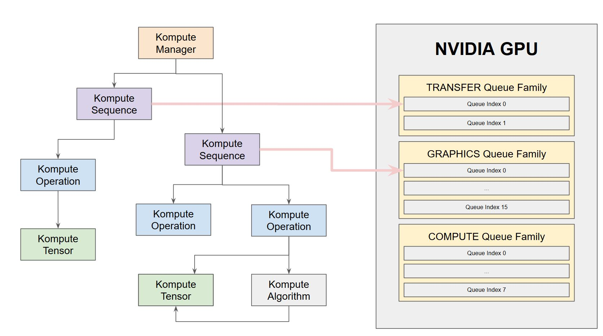

Asynchronous and Parallel Operations¶
In GPU computing it is possible to have multiple levels of asynchronous and parallel processing of GPU tasks.
It is important to understand the conceptual distinctions of the diffent terminology when using each of these components.
In this section we will cover the following points:
Asynchronous operation submission
Parallel processing of operations
You can also find the published blog post on the topic using Kompute, which covers the points discussed in this section further.
Below is the architecture we’ll be covering further in the parallel operations section through command submission across multiple family queues.
{kind=link}
Asynchronous operation submission¶
As the name implies, this refers to the asynchronous submission of operations. This means that operations can be submitted to the GPU, and the C++ / host CPU can continue performing tasks, until when the user desires to run await to wait until the operation finishes.
This basically provides further granularity on Vulkan Fences, which is its means to enable the CPU host to know when GPU commands have finished executing.
It is important that submitting tasks asynchronously, does not mean that these will be executed in parallel. Parallel execution of operations will be covered in the following section.
Asynchronous operation submission can be achieved through the kp::Manager, or directly through the kp::Sequence. Below is an example using the Kompute manager.
Conceptual Overview¶
Asynchronous job submission is done using evalOpAsync and evalOpAwait functions.
For simplicity the evalOpAsyncDefault and evalOpAwaitDefault functions are provided, which can be used similar to the synchronous counterparts (which basically use the default named sequence).
One important thing to bare in mind when using asynchronous submissions, is that you should make sure that any overlapping asynchronous functions are run in separate sequences.
The reason why this is important is that the Await function not only waits for the fence, but also runs the postEval functions across all operations, which is required for several operations.
Async/Await Example¶
A simple example of asynchronous submission can be found below.
First we are able to create the manager as we normally would.
1 2 3 4 5 | // You can allow Kompute to create the Vulkan components, or pass your existing ones
kp::Manager mgr; // Selects device 0 unless explicitly requested
// Creates tensor an initializes GPU memory (below we show more granularity)
auto tensor = std::make_shared<kp::Tensor>(kp::Tensor(std::vector<float>(10, 0.0)));
|
We can now run our first asynchronous command, which in this case we can use the default sequence.
Sequences can be executed in synchronously or asynchronously without having to change anything.
1 2 | // Create tensors data explicitly in GPU with an operation
mgr.evalOpAsyncDefault<kp::OpTensorCreate>({ tensor });
|
While this is running we can actually do other things like in this case create the shader we’ll be using.
In this case we create a shader that should take a couple of milliseconds to run.
1 2 3 4 5 6 7 8 9 10 11 12 13 14 15 16 17 18 19 20 21 22 23 24 25 | // Define your shader as a string (using string literals for simplicity)
// (You can also pass the raw compiled bytes, or even path to file)
std::string shader(R"(
#version 450
layout (local_size_x = 1) in;
layout(set = 0, binding = 0) buffer b { float pb[]; };
shared uint sharedTotal[1];
void main() {
uint index = gl_GlobalInvocationID.x;
sharedTotal[0] = 0;
// Iterating to simulate longer process
for (int i = 0; i < 100000000; i++)
{
atomicAdd(sharedTotal[0], 1);
}
pb[index] = sharedTotal[0];
}
)");
|
Now we are able to run the await function on the default sequence.
If we are using the manager, we need to make sure that we are awaiting the same named sequence that was triggered asynchronously.
If the sequence is not running or has finished running, it would return immediately.
The parameter provided is the maximum amount of time to wait in nanoseconds. When the timeout expires, the sequence would return (with false value), but it does not stop the processing in the GPU - the processing would continue as normal.
1 2 3 4 | // We can now await for the previous submitted command
// The first parameter can be the amount of time to wait
// The time provided is in nanoseconds
mgr.evalOpAwaitDefault(10000);
|
Similar to above we can run other commands such as the OpAlgoBase asynchronously.
1 2 3 4 5 6 7 8 9 10 | // Run Async Kompute operation on the parameters provided
mgr.evalOpAsyncDefault<kp::OpAlgoBase<>>(
{ tensor },
std::vector<char>(shader.begin(), shader.end()));
// Here we can do other work
// When we're ready we can wait
// The default wait time is UINT64_MAX
mgr.evalOpAwaitDefault()
|
Finally, below you can see that we can also run syncrhonous commands without having to change anything.
1 2 3 4 5 6 7 | // Sync the GPU memory back to the local tensor
// We can still run synchronous jobs in our created sequence
mgr.evalOpDefault<kp::OpTensorSyncLocal>({ tensor });
// Prints the output: B: { 100000000, ... }
std::cout << fmt::format("B: {}",
tensor.data()) << std::endl;
|
Parallel Operation Submission¶
In order to work with parallel execution of tasks, it is important that you understand some of the core GPU processing limitations, as these can be quite broad and hardware dependent, which means they will vary across NVIDIA / AMD / ETC video cards.
Conceptual Overview¶
If you are familiar with Vulkan, you will have experience that the first few things you do is fetching the physical Queues from the device. The queues themselves tend to have three main particular features - they can be GRAPHICS, TRANSFER and COMPUTE (between a few others we’ll skip for simplicity).
Queues can have multiple properties - namely a queue can be of type GRAPHICS+TRANSFER+COMPUTE, etc. Now here comes the key point: the underlying hardware may (or may not) support parallelized processing at multiple levels.
Let’s take a tangible example. The [NVIDIA 1650](http://vulkan.gpuinfo.org/displayreport.php?id=9700#queuefamilies) for example has 16 GRAPHICS+TRANSFER+COMPUTE queues on familyIndex 0, then 2 TRANSFER queues in familyIndex 1 and finally 8 COMPUTE+TRANSFER queues in familyIndex 2.
With this in mind, the NVIDIA 1650 as of today does not support intra-family parallelization, which means that if you were to submit commands in multiple queues of the same family, these would still be exectured synchronously.
However the NVIDIA 1650 does support inter-family parallelization, which means that if we were to submit commands across multiple queues from different families, these would execute in parallel.
This means that we would be able to execute parallel workloads as long as we’re running them across multiple queue families. This is one of the reasons why Vulkan Kompute enables users to explicitly select the underlying queues and queue families to run particular workloads on.
It is important that you understand what are the capabilities and limitations of your hardware, as parallelization capabilities can vary, so you will want to make sure you account for potential discrepancies in processing structures, mainyl to avoid undesired/unexpected race conditions.
Parallel Execution Example¶
In this example we will demonstrate how you can set up parallel processing across two compute families to achieve 2x speedups when running processing workloads.
To start, you will see that we do have to create the manager with extra parameters. This includes the GPU device index we want to use, together with the array of the queues that we want to enable.
In this case we are using only two queues, which as per the section above, these would be familyIndex 0 which is of type GRAPHICS+COMPUTE+TRANSFER and familyIndex 2 which is of type COMPUTE+TRANSFER.
In this case based on the specifications of the NVIDIA 1650 we could define up to 16 graphics queues (familyIndex 0), 2 transfer queues (familyIndex 1), and 8 compute queues (familyIndex 2) in no particular order. This means that we could have something like { 0, 1, 1, 2, 2, 2, 0, … } as our initialization value.
You will want to keep track of the indices you initialize your manager, as you will be referring back to this ordering when creating sequences with particular queues.
1 2 3 4 5 6 7 | // In this case we select device 0, and for queues, one queue from familyIndex 0
// and one queue from familyIndex 2
uint32_t deviceIndex(0);
std::vector<uint32_t> familyIndices = {0, 2};
// We create a manager with device index, and queues by queue family index
kp::Manager mgr(deviceIndex, familyIndices);
|
We are now able to create sequences with a particular queue.
By default the Kompute Manager is created with device 0, and with a single queue of the first compatible familyIndex. Similarly, by default sequences are created with the first available queue.
In this case we are able to specify which queue we want to use. Below we initialize “queueOne” named sequence with the graphics family queue, and “queueTwo” with the compute family queue.
It’s worth mentioning you can have multiple sequences referencing the same queue.
1 2 3 4 5 | // We need to create explicit sequences with their respective queues
// The second parameter is the index in the familyIndex array which is relative
// to the vector we created the manager with.
mgr.createManagedSequence("queueOne", 0);
mgr.createManagedSequence("queueTwo", 1);
|
We create the tensors without modifications.
1 2 3 | // Creates tensor an initializes GPU memory (below we show more granularity)
auto tensorA = std::make_shared<kp::Tensor>(kp::Tensor(std::vector<float>(10, 0.0)));
auto tensorB = std::make_shared<kp::Tensor>(kp::Tensor(std::vector<float>(10, 0.0)));
|
Similar to the asyncrhonous usecase above, we can still run synchronous commands without modifications.
1 2 3 4 5 6 7 8 9 10 11 12 13 14 15 16 17 18 19 20 21 22 23 24 25 26 27 28 | // We run the first step synchronously on the default sequence
mgr.evalOpDefault<kp::OpTensorCreate>({ tensorA, tensorB });
// Define your shader as a string (using string literals for simplicity)
// (You can also pass the raw compiled bytes, or even path to file)
std::string shader(R"(
#version 450
layout (local_size_x = 1) in;
layout(set = 0, binding = 0) buffer b { float pb[]; };
shared uint sharedTotal[1];
void main() {
uint index = gl_GlobalInvocationID.x;
sharedTotal[0] = 0;
// Iterating to simulate longer process
for (int i = 0; i < 100000000; i++)
{
atomicAdd(sharedTotal[0], 1);
}
pb[index] = sharedTotal[0];
}
)");
|
Now we can actually trigger the parallel processing, running two OpAlgoBase Operations - each in a different sequence / queue.
1 2 3 4 5 6 7 8 9 10 11 | // Run the first parallel operation in the `queueOne` sequence
mgr.evalOpAsync<kp::OpAlgoBase<>>(
{ tensorA },
"queueOne",
std::vector<char>(shader.begin(), shader.end()));
// Run the second parallel operation in the `queueTwo` sequence
mgr.evalOpAsync<kp::OpAlgoBase<>>(
{ tensorB },
"queueTwo",
std::vector<char>(shader.begin(), shader.end()));
|
Similar to the asynchronous example above, we are able to do other work whilst the tasks are executing.
We are able to wait for the tasks to complete by triggering the evalOpAwait on the respective sequence.
1 2 3 4 5 6 7 8 9 10 11 12 | // Here we can do other work
// We can now wait for the two parallel tasks to finish
mgr.evalOpAwait("queueOne")
mgr.evalOpAwait("queueTwo")
// Sync the GPU memory back to the local tensor
mgr.evalOp<kp::OpTensorSyncLocal>({ tensorA, tensorB });
// Prints the output: A: 100000000 B: 100000000
std::cout << fmt::format("A: {}, B: {}",
tensorA.data()[0], tensorB.data()[0]) << std::endl;
|